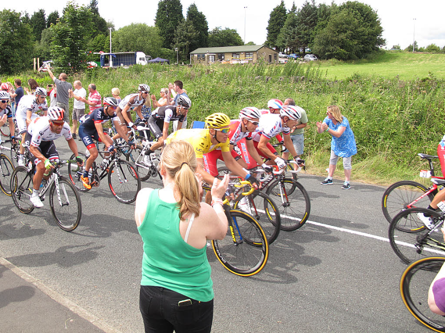
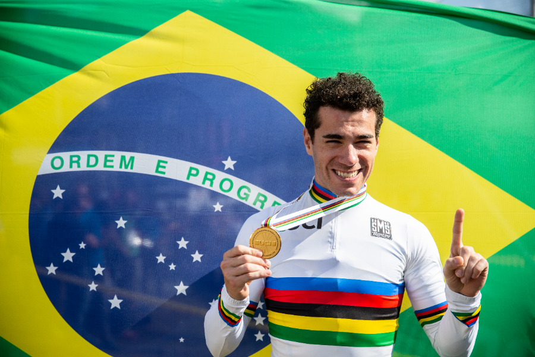
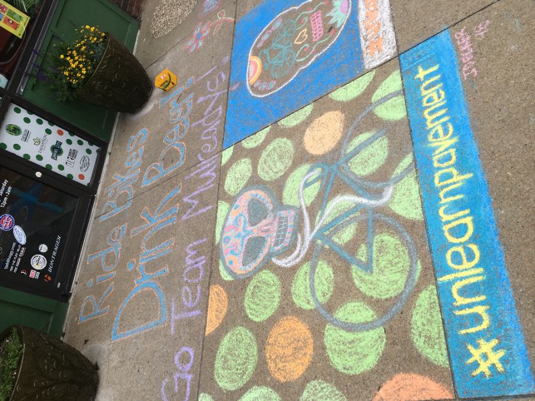
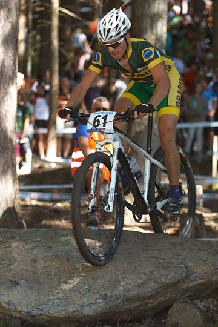
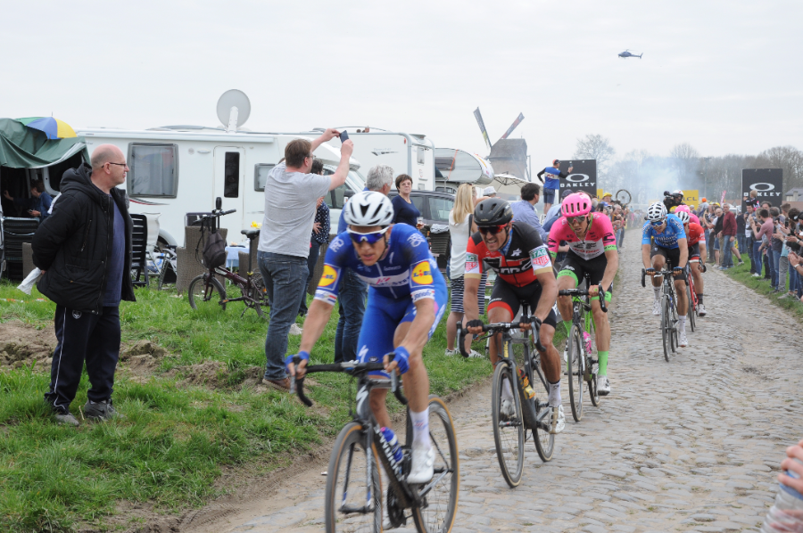
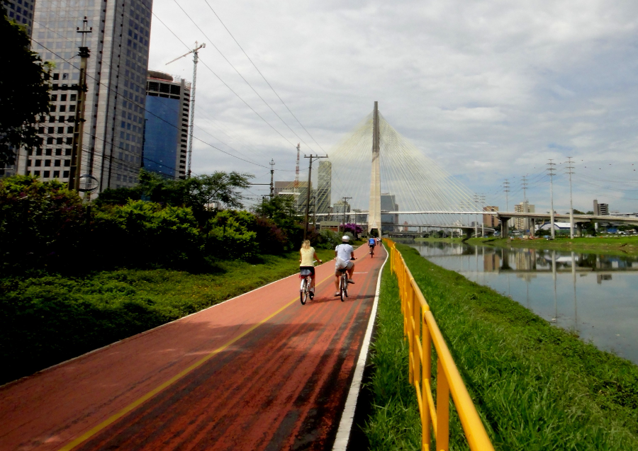

Novidades no Pelotão
Escolha seu pelote ou vá direto na notícia em destaque, com análise e dossiê do que anda rolando no mundo do ciclismo mundial.
8 matérias de pé no site

Geograph.org.uk, CC BY-SA 2.0Grandes VoltasPogačar crava recorde no Tourmalet e abre luz sobre Vingegaard no Tour de France 2026
Na 6ª etapa, o esloveno bate o recorde de subida do Tourmalet e tira 2min43 em Gavarnie.
Como treinar para subidas longas como o Tourmalet (sem ser o Pogačar)
Base aeróbica, blocos de limiar, cadência e pacing — os 4 pilares por trás do recorde.

Guilherme.Rosindo, Wikimedia Commons, CC BY-SA 4.0RoadAvancini é campeão brasileiro de contrarrelógio; Swift Pro Cycling domina em Brasília
Equipe soma 3 títulos, 1 vice e 2 terceiros lugares no Brasileiro de Estrada 2026.

Wikimedia Commons (Unbound Gravel, Emporia-KS)GravelUnbound Gravel 2026: Würtz Schmidt e Gomez Villafañe vencem na lama
Ataque solo no masculino e sprint de 5 decidido por 1 segundo no feminino.

Wikimedia Commons (foto ilustrativa de XCO)MTBFim de uma era: Cannondale encerra sua equipe de fábrica de mountain bike
Anúncio chega em meio à disputa da Copa do Mundo de MTB 2026.

Wikimedia Commons (setor de pavé, Paris-Roubaix)ClássicasClássicas de 2026: Pogačar iguala recorde na Flandres, Van Aert enfim vence Roubaix
1ª vitória de Van Aert em Roubaix encerra jejum belga de 7 anos na prova.

Wikimedia Commons (foto ilustrativa de ciclovia urbana no Brasil)UrbanoDistrito Federal se aproxima de 1.000 km de ciclovias com o Vai de Bike
Malha já soma 745 km — 2ª maior do país — com meta de 1.000 km até dezembro.
Pogačar transforma o Tour de Suisse em recital e conquista o título
Esloveno vence 3 etapas em 5 dias e abre 6min32 para Carapaz na edição encurtada.
◦ Este catálogo é atualizado a cada novo HTML publicado no repositório: o agente adiciona a entrada em assets/data/articles.json, inclui o card aqui e o Cloudflare Pages faz o deploy.